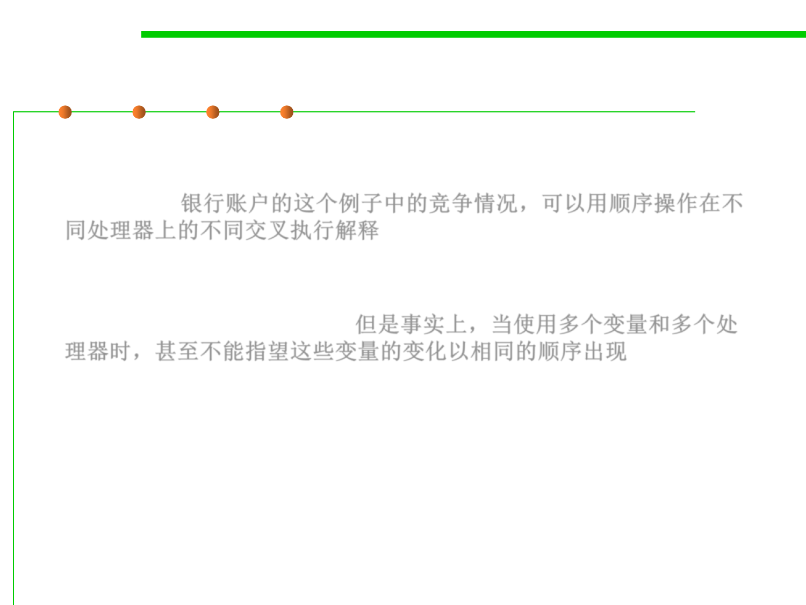

Reordering
10.1 Concurrency and Thread-Safety
▪ The race condition on the bank account balance can be explained in
terms of different interleavings of sequential operations on different
processors. 银行账户的这个例子中的竞争情况，可以用顺序操作在不
同处理器上的不同交叉执行解释
▪ But in fact, when you’re using multiple variables and multiple
processors, you can’t even count on changes to those variables
appearing in the same order. 但是事实上，当使用多个变量和多个处
理器时，甚至不能指望这些变量的变化以相同的顺序出现